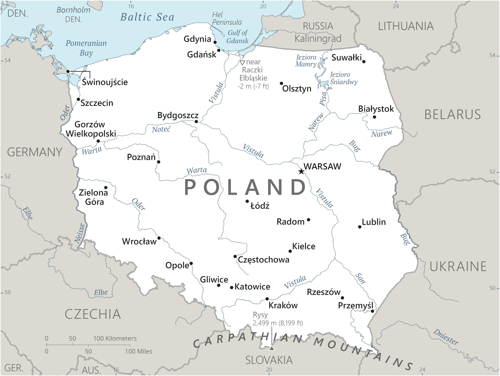

Genel Bilgiler
Polonya, Orta Avrupa’da yer alan parlamenter bir cumhuriyettir. Başkenti Varşova’dır. Yaklaşık 38 milyon nüfusa sahiptir. Resmî dili Lehçe’dir ve para birimi Polonya Zlotisi (PLN)’dir. Polonya Avrupa Birliği ve NATO üyesidir ve tarih boyunca birçok defa sınırları değişmiş, zengin kültürel ve tarihi mirasa sahip bir ülkedir.
Polonya kuzeyde Baltık Denizi, doğuda Belarus ve Ukrayna, güneyde Çekya ve Slovakya, batıda Almanya ile sınır komşusudur. Yüzölçümü yaklaşık 312.696 km²’dir. Ülke coğrafyası kuzeyde düzlükler ve göller, güneyde ise Karpatlar ve Sudet Dağları ile çeşitlenir. Büyük nehirleri arasında Vistül ve Oder bulunur.
Başkent: Varşova
Kıta: Avrupa
Yüzölçümü: 312.696 km²
Nüfus (2025): 38.000.000

Bayrak Anlamı: Polonya bayrağı yatay iki eşit şeritten oluşur: beyaz ve kırmızı. Beyaz barışı ve saflığı, kırmızı ise cesareti ve ulusal mücadeleyi simgeler. Bayrak 1919 yılında resmî olarak kabul edilmiş olup, Polonya’nın bağımsızlık ve ulusal kimliğinin sembolüdür.
Polonya Haritası
Ekonomi
Polonya ekonomisi Avrupa’nın en büyük 6. ekonomilerinden biridir ve son yıllarda hızlı büyüme göstermiştir. Sanayi, hizmetler ve tarım önemli sektörlerdir. Sanayi alanında otomotiv, makine, kimya ve gıda işleme öne çıkar. Hizmet sektörü özellikle finans, IT ve turizm alanlarında gelişmiştir. Tarımda buğday, çavdar, arpa ve patates yaygın olarak yetiştirilir.
| Yıl | İhracat (Milyar $) | İthalat (Milyar $) |
|---|---|---|
| 2019 | 205 | 195 |
| 2020 | 190 | 180 |
| 2021 | 220 | 210 |
| 2022 | 230 | 220 |
| 2023 | 235 | 225 |